Calendario de todos los módulos
Un único calendario mensual reúne los hitos de todos los módulos del curso. Puedes cambiar de mes o volver al mes actual con Hoy.
La misma guía que encontrarás dentro de la aplicación, con capturas reales de cada pantalla.
Punto de entrada de la aplicación: un calendario con todos los módulos del curso.
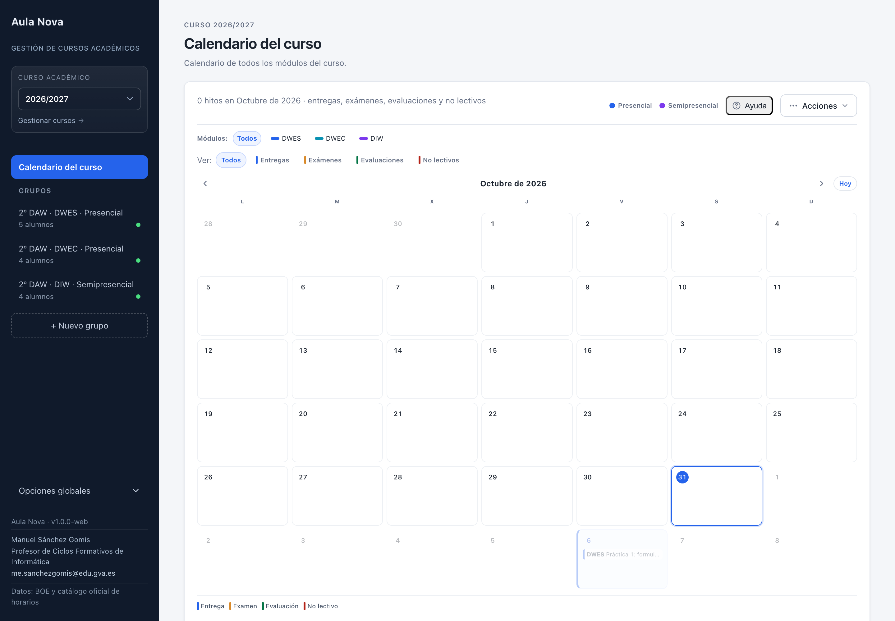
Captura real de Calendario del curso · clic para ampliarEl calendario del curso es la pantalla inicial y la vista de conjunto. No muestra tablas de alumnado ni listados de módulos: todo gira alrededor del calendario, que reúne entregas, exámenes, evaluaciones y días no lectivos de todos los grupos.
Cada módulo tiene un color estable. Las etiquetas dentro de cada día indican el módulo y el hito, y llevan al dashboard de ese módulo. La leyenda de módulos y la leyenda de modalidad permiten leer el calendario de un vistazo.
Un único calendario mensual reúne los hitos de todos los módulos del curso. Puedes cambiar de mes o volver al mes actual con Hoy.
Cada día muestra hasta dos etiquetas con las siglas del módulo y el título del hito. Si hay más, aparece un contador; la etiqueta abre el dashboard del módulo.
La fila de módulos funciona como filtro: pulsa Todos para ver el curso completo o un módulo concreto para quedarte solo con sus hitos. El filtro también actualiza el contador de hitos del mes.
Además del módulo, puedes filtrar por Entregas, Exámenes, Evaluaciones o No lectivos. Los filtros se combinan y el contador del mes se actualiza con el resultado.
Una entrega abre directamente su pantalla de notas; un examen o evaluación abre las fechas del módulo; el resto de hitos abre el dashboard del módulo.
Al pulsar un día, debajo del calendario se muestran todos sus hitos, con hora, módulo y enlace para abrir el módulo. Así no se pierde ningún evento cuando un día tiene más de dos etiquetas.
Desde Acciones puedes importar el calendario escolar completo o definir un día no lectivo con fecha, tipo y descripción. Los festivos importados aparecen en el mismo calendario.
Acciones permite imprimir el calendario en PDF o descargarlo en formato .ics para Google Calendar, Outlook o Apple Calendar.
La aplicación asigna automáticamente un color a cada módulo. La leyenda superior permite identificar los módulos y el color no cambia al navegar entre meses.
La leyenda azul/violeta indica presencial o semipresencial. Las etiquetas del calendario usan el color del módulo, no el de la modalidad.
No hay tablas de alumnado, colas de trabajo ni listados de módulos en esta pantalla. Esas tareas se consultan desde el dashboard de cada módulo.
Datos del profesorado, del centro educativo y logo PNG de la aplicación.
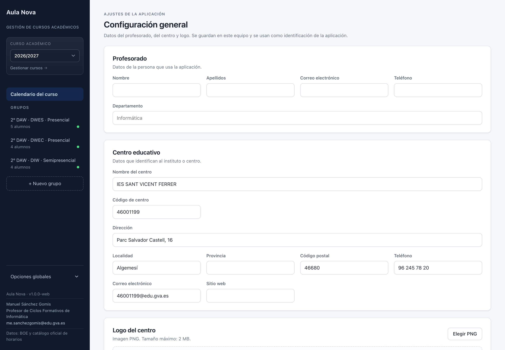
Captura real de Configuración general · clic para ampliarConfiguración general es el lugar para identificar la instalación: quién la usa, qué centro aparece y qué logo se quiere mostrar. Los datos se guardan en el equipo, no en un servicio externo.
El logo debe ser un PNG de hasta 2 MB. Se puede cambiar o quitar cuando haga falta. Los campos de profesorado y centro están separados para que puedas completar solo lo que necesites.
Nombre, apellidos, correo, teléfono y departamento de la persona que utiliza la aplicación. Son datos de identificación, no credenciales de acceso.
Nombre, código de centro, dirección, localidad, provincia, código postal, teléfono, correo y web del instituto. Se guardan para la identificación de la aplicación.
Selecciona una imagen PNG de hasta 2 MB. La vista previa aparece antes de guardar y puedes quitar el logo cuando quieras.
La configuración se guarda en la base de datos local. No se envía a ningún servidor ni se sincroniza entre equipos.
El dashboard reúne la información importante del grupo y la barra superior permite saltar a cualquier sección.
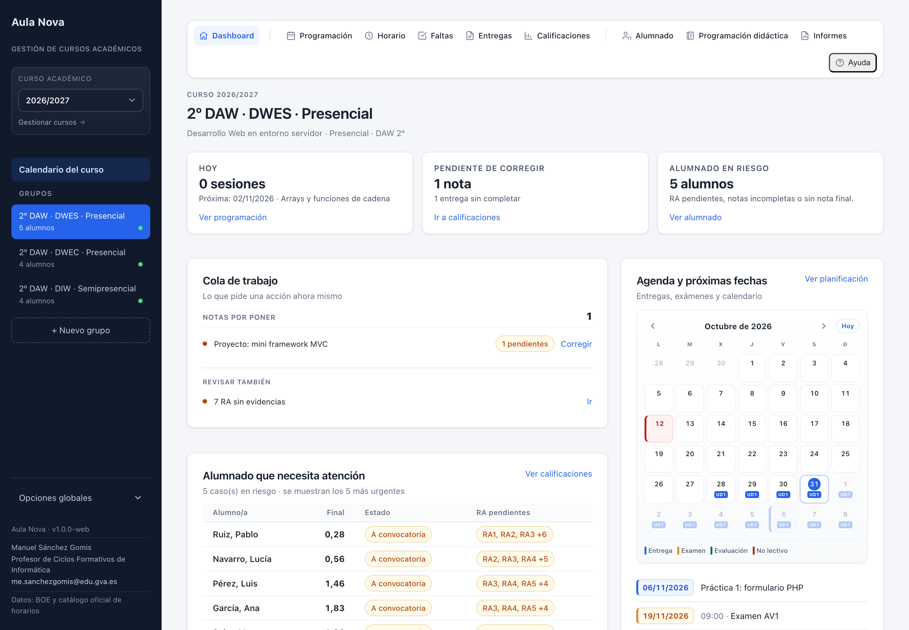
Captura real de Dashboard del grupo · clic para ampliarEl dashboard es el punto de partida de un grupo. Arriba tienes la barra de navegación común: Dashboard, Día a día y Consulta. La opción activa aparece resaltada y el botón Ayuda abre la explicación de la pantalla en la que estás.
La primera fila responde a tres preguntas: qué pasa hoy, cuántas notas quedan por poner y cuánto alumnado está en riesgo. Debajo, la cola de trabajo muestra las entregas pendientes de corregir y los avisos que requieren una acción. La agenda y las próximas fechas quedan a la derecha, y el estado del grupo, la formación y la programación didáctica se consultan en «Más información del grupo».
La barra cambia de sección sin usar el botón Volver: Dashboard, Día a día y Consulta. La opción activa queda resaltada y el botón Ayuda abre la explicación de la pantalla actual.
Las tres tarjetas superiores muestran las sesiones de hoy, las notas que quedan por poner y el alumnado en riesgo. Son accesos directos: cada tarjeta enlaza con la pantalla donde se resuelve.
Agrupa lo que pide una acción inmediata: entregas con notas pendientes y avisos como RA sin evidencias, entregas sin rúbrica o días de programación sin contenido.
La tabla muestra la nota final, el estado y los RA pendientes de cada alumno. Se actualiza con las notas, los criterios y las entregas, y permite detectar rápidamente quién va a convocatoria.
El calendario colorea entregas, exámenes, evaluaciones y días no lectivos. Debajo aparecen los próximos hitos y los días no lectivos, con navegación mensual y botón Hoy.
El bloque plegable reúne el estado del grupo, la formación en empresa y la programación didáctica. Se abre solo cuando necesitas consultar esos datos, para no llenar el dashboard de información pasiva.
Consulta la distribución semanal de sesiones, recreos y tutorías del grupo.
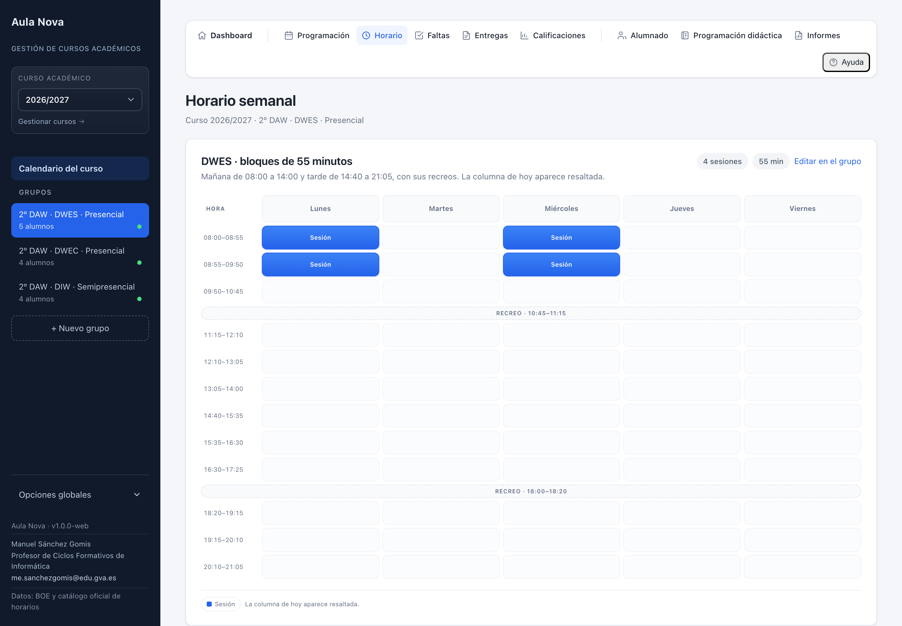
Captura real de Horario semanal · clic para ampliarLa vista de horario muestra la semana completa del grupo en bloques de 55 minutos. La columna del día actual aparece resaltada y los recreos se dibujan como franjas separadas entre mañana y tarde.
En presencial se ven las sesiones del módulo. En semipresencial también aparecen las tutorías colectivas e individuales, con colores distintos. El botón Editar en el grupo abre el formulario del grupo para cambiar los bloques.
La tabla muestra las franjas horarias de mañana y tarde. Cada bloque representa una sesión de 55 minutos y los recreos aparecen como separadores entre tramos.
En presencial se muestran las sesiones del módulo. En semipresencial se añaden tutorías colectivas e individuales, con colores distintos para distinguirlas de una sesión normal.
La columna del día de hoy queda resaltada para localizar rápidamente qué toca. La cabecera indica el curso académico y el grupo al que pertenece el horario.
Las etiquetas superiores indican el número de sesiones y la duración del bloque. La leyenda inferior explica qué representa cada color.
El enlace Editar en el grupo abre el formulario del grupo, donde se marcan los bloques de cada día y se configuran las tutorías de la modalidad semipresencial.
Registra el trabajo diario del grupo: sesiones, contenidos, desviaciones y observaciones.
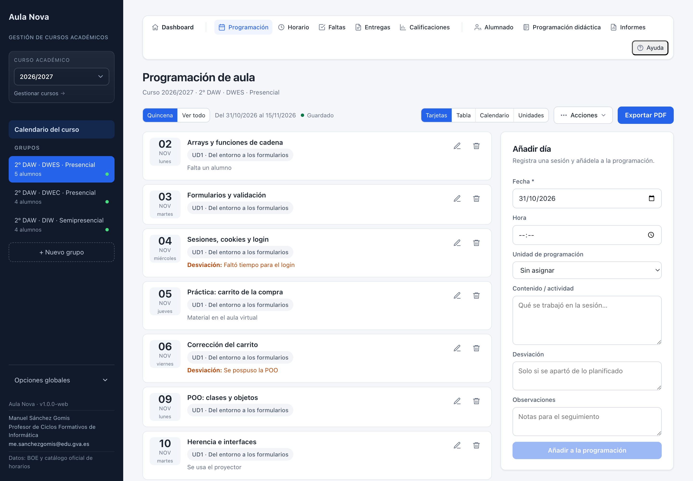
Captura real de Programación de aula · clic para ampliarProgramación de aula sirve para anotar qué se trabaja cada día. Puedes crear sesiones con fecha y hora, añadir varias sesiones al mismo día y dejar constancia de contenidos, desviaciones y observaciones. Las vistas de Tarjetas y Tabla permiten pasar de una lectura cómoda a una edición rápida.
La pestaña Calendario muestra las sesiones en formato mensual. El calendario escolar se gestiona de forma centralizada en Calendario del curso. Desde Acciones puedes cargar un ejemplo, importar días o descargar el esquema; Exportar PDF genera el informe completo.
Cada sesión tiene fecha, hora, contenido, desviación y observaciones. Puedes añadir varias sesiones al mismo día y editar la fila directamente en la vista de Tabla.
Tarjetas es cómoda para leer y revisar; Tabla permite editar muchas filas seguidas; Calendario muestra la distribución mensual de las sesiones.
La pestaña Unidades organiza las unidades de programación y sus sesiones. Los festivos, no lectivos y vacaciones se gestionan en Calendario del curso.
Desde Acciones puedes cargar un ejemplo, importar días desde JSON/CSV o descargar el esquema. Exportar PDF genera el documento completo con fechas, horario y tutorías.
La barra superior indica si hay cambios sin guardar. Si cambias de pestaña o sales de la pantalla, revisa primero que la programación esté guardada.
Organiza unidades, fechas, criterios, RA/CE y la presentación del módulo.
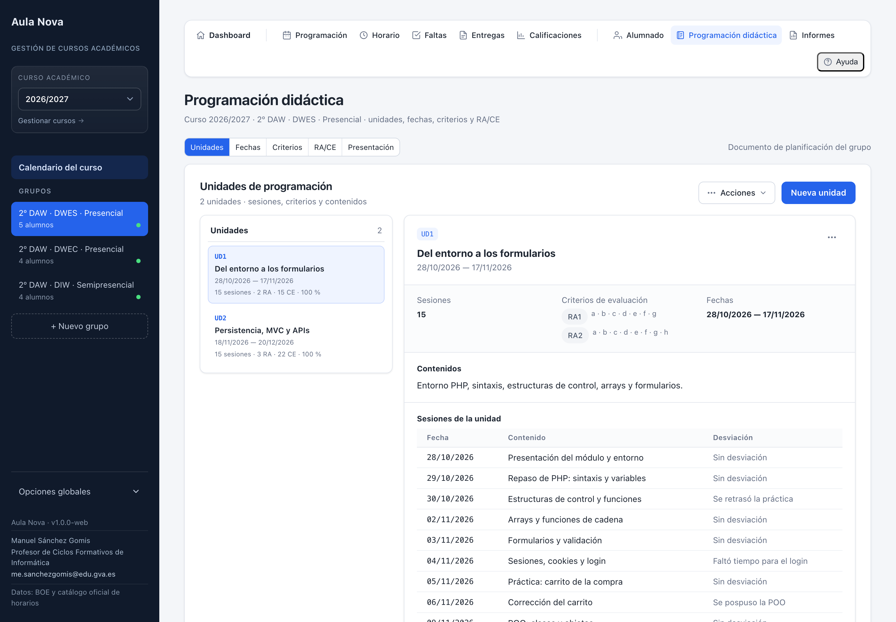
Captura real de Programación didáctica · clic para ampliarProgramación didáctica es el espacio de planificación a más largo plazo. Sus pestañas separan las unidades, las fechas de evaluación y exámenes, los criterios y la cobertura de RA/CE. Cada unidad puede trabajar CE concretos, todos los CE de un RA o CE de varios RA.
La presentación del módulo es una plantilla HTML editable que se rellena con los datos reales del grupo: unidades, RA/CE, exámenes, pesos y requisitos. Puedes previsualizarla, copiarla como HTML enriquecido para Aules, descargarla o imprimirla en PDF.
Cada unidad reúne sus sesiones, contenidos, RA/CE y criterios. Puedes crear unidades, ordenarlas y consultar qué parte del módulo cubre cada una.
Las fechas se pueden crear a mano o importar. Se usan para la agenda del dashboard y para organizar los bloques de las convocatorias.
La pestaña de criterios muestra el peso de cada instrumento. La pestaña de RA/CE permite comprobar qué resultados y criterios están cubiertos por las unidades y las entregas.
Los festivos, no lectivos y vacaciones se importan o definen desde Calendario del curso. Allí se ven junto a las entregas, exámenes y evaluaciones de todos los módulos.
La plantilla HTML se rellena con datos reales del grupo. Puedes ver la vista previa, copiarla como HTML enriquecido para Aules, descargarla o imprimirla en PDF.
Antes de cerrar la programación, revisa que las unidades tengan sus RA/CE, que las fechas de examen encajen con los trimestres y que la presentación muestre la información actualizada.
Define cómo se calcula la nota: categorías, avaluaciones, RA, mínimos y pesos por trimestre.
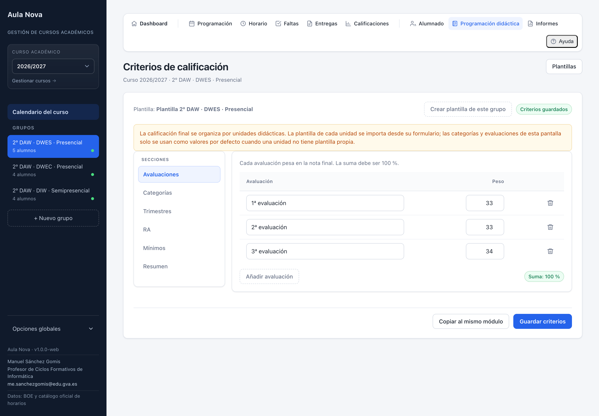
Captura real de Criterios de calificación · clic para ampliarLos criterios son la base de todos los cálculos. Las categorías agrupan instrumentos de evaluación (exámenes, actividades, proyectos, etc.) y tienen un peso. Las avaluaciones o trimestres también tienen su peso en la nota final. Todas las sumas deben ser exactamente 100 %.
La pestaña RA reparte el peso de cada resultado de aprendizaje en la nota final; por defecto se reparte a partes iguales. La pestaña Mínimos permite configurar notas mínimas bloqueantes. La pestaña Trimestres permite que un trimestre use pesos de categorías distintos a los generales, por ejemplo 50 % examen y 50 % proyecto con actividades a 0 %.
Cada categoría representa un tipo de instrumento: exámenes, actividades, proyectos, etc. Su peso se aplica a todos los trimestres que no tengan un cálculo propio.
Los trimestres o avaluaciones también ponderan en la nota final. La suma de todos los pesos debe ser exactamente 100 %; si no, no se puede guardar.
La nota final se calcula ponderando los RA. Por defecto se reparte el 100 % a partes iguales, pero puedes dar más peso a un RA concreto desde la pestaña RA.
Puedes fijar una nota mínima por entrega, por categoría, por avaluación y para aprobar el módulo. Si no se cumple, la categoría o el trimestre quedan suspensos aunque la media sea alta.
En Trimestres puedes activar un cálculo distinto solo para un trimestre. Es útil cuando un trimestre se evalúa con un examen y un proyecto, sin actividades, sin cambiar el resto del curso.
La pantalla muestra si las sumas son correctas. Los criterios guardados se usan en Calificaciones, en los informes y en los grupos que compartan la misma plantilla.
Un trimestre puede usar los pesos generales o un cálculo propio, sin afectar a los demás.
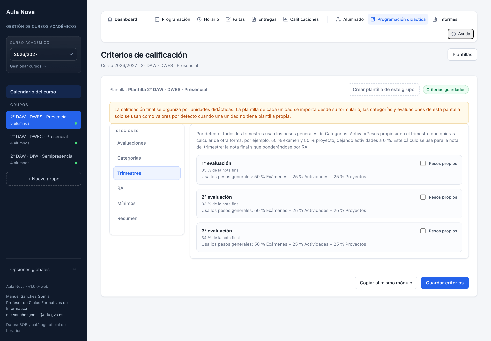
Captura real de Pesos propios por trimestre · clic para ampliarEsta pestaña sirve para los trimestres que no siguen el cálculo general. Al activar «Pesos propios» en un trimestre, se copian los pesos generales y puedes cambiarlos solo para ese trimestre. Los demás trimestres siguen usando la configuración de Categorías.
Un ejemplo habitual es un trimestre con 50 % examen y 50 % proyecto, dejando actividades al 0 %. Las categorías con peso 0 no penalizan ese trimestre. La suma de los pesos propios debe ser 100 %; si no, no se puede guardar. En Calificaciones verás el indicador «Cálculo propio».
Úsalo cuando un trimestre tenga un sistema de evaluación distinto: por ejemplo, un proyecto final que sustituye a las actividades habituales o un examen que vale la mitad de la nota.
Entra en Criterios → Trimestres y marca «Pesos propios» en el trimestre. Se copian los pesos generales como punto de partida y puedes modificarlos sin tocar los demás trimestres.
Pon exámenes a 50 %, proyectos a 50 % y actividades a 0 %. El trimestre se calculará solo con exámenes y proyectos; las actividades seguirán visibles en el detalle, pero no restarán nota.
Una categoría con peso 0 no cuenta para la media del trimestre y sus suspensos tampoco bloquean ese trimestre. Esto permite excluir instrumentos que no se han usado.
Los pesos propios deben sumar exactamente 100 %. Si la suma no cuadra, la aplicación muestra un aviso y no permite guardar los criterios.
El cálculo propio afecta a la nota del trimestre. La nota final sigue calculándose con los pesos de RA, para mantener la trazabilidad del módulo.
Consulta la nota de cada trimestre, la nota final, los RA y las convocatorias ordinaria y extraordinaria.
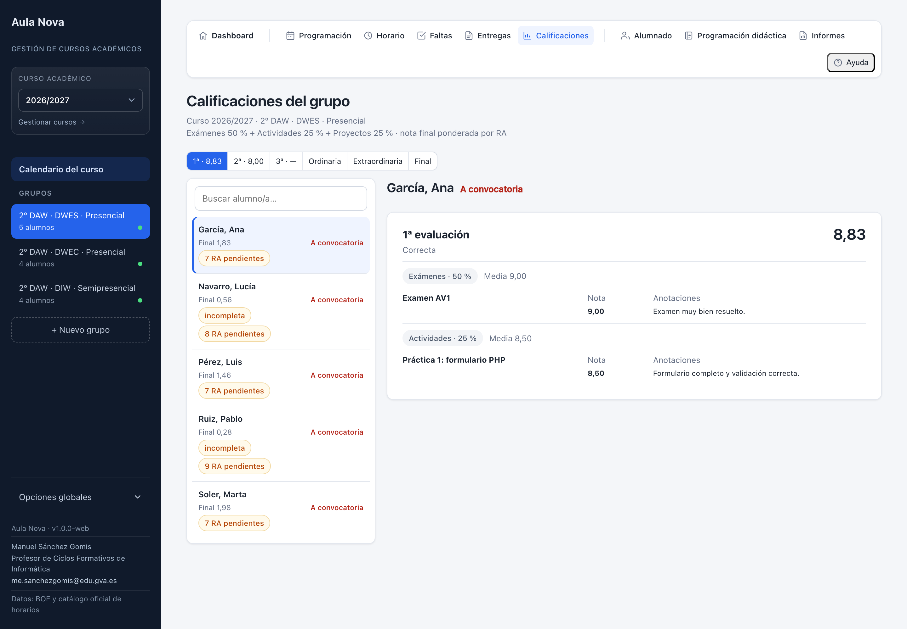
Captura real de Calificaciones y convocatorias · clic para ampliarCalificaciones es una vista de consulta: la nota final no se escribe a mano, se calcula a partir de las entregas, las categorías, los trimestres y los RA. La lista de la izquierda permite buscar alumnado y ver su nota final; a la derecha se muestra el detalle del alumno seleccionado.
Las pestañas superiores permiten entrar en cada trimestre, en Ordinaria, en Extraordinaria y en la nota final. En la pestaña final se muestra la fórmula de RA, los RA superados y pendientes y el acceso al informe. Las convocatorias agrupan bloques de examen y se crean automáticamente al abrirlas; el bloque Examen global, si se marca, vale el 100 % de esa convocatoria.
La columna izquierda permite buscar por nombre o DNI y muestra la nota final, el estado y los RA pendientes. Al seleccionar un alumno se carga su detalle completo.
Cada pestaña de trimestre muestra las categorías, sus pesos efectivos, las entregas y la nota resultante. Si el trimestre tiene un cálculo propio, aparece el indicador correspondiente.
La pestaña Final muestra la nota final, la fórmula de pesos de RA y el estado de cada resultado de aprendizaje. La nota final no se edita aquí.
Ordinaria y Extraordinaria se crean automáticamente y agrupan los bloques que debe realizar cada alumno. Puedes ajustar los bloques, asignar notas y consultar la nota de la convocatoria.
Si un alumno tiene marcado el bloque Examen global, su nota sustituye al resto de bloques de esa convocatoria y pasa a valer el 100 %. No se suman los demás bloques.
Desde la pestaña Final puedes generar el informe PDF del alumno o abrir su informe completo en la sección Informes.
Cada entrega se asocia a una unidad, una avaluación, una categoría y sus RA/CE.
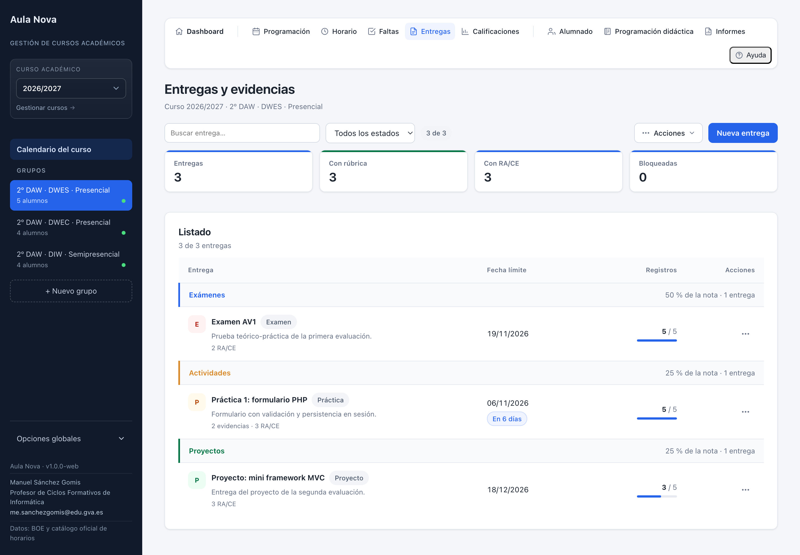
Captura real de Entregas y evidencias · clic para ampliarLas entregas son las tareas evaluables del grupo. Cada una debe pertenecer a una unidad, una avaluación y una categoría, y puede mapearse a uno o varios RA/CE. La ficha de la entrega contiene el enunciado, la descripción del problema y las restricciones.
Al abrir una entrega se muestra primero la pestaña Ficha y después Notas. La ficha HTML se puede copiar para Aules, descargar o imprimir. También puedes añadir rúbrica, evidencias y bloquear la entrega para que no admita cambios. La exportación genera PDF, ZIP o un ZIP con PDF y archivos según el contenido.
Cada entrega debe tener unidad, avaluación, categoría y al menos un RA/CE. Estas asociaciones permiten calcular la nota del trimestre y la nota por RA.
La ficha contiene Enunciado, Descripción del problema y Restricciones. Es la primera pestaña al abrir la entrega y se puede copiar para Aules, descargar o imprimir.
Puedes añadir una rúbrica en texto y/o archivo y clasificar las evidencias por tipo. Las evidencias acompañan a la entrega en las exportaciones.
La pestaña Notas permite poner nota decimal y anotaciones por alumno. Una entrega bloqueada no admite cambios hasta que la desbloquees desde la propia entrega o desde Calificaciones.
Puedes exportar una entrega, una avaluación o el curso completo. Si solo hay texto/rúbrica se genera PDF; si hay archivos, ZIP; si hay ambos, ZIP con el PDF y los archivos.
Los PDF de entregas y exámenes usan la cabecera configurada: datos y logo del centro, logo de Conselleria y logo de la Unión Europea.
Al imprimir un examen se usa un formato de texto limpio: instrucciones y restricciones en un recuadro superior, y después el enunciado y el problema como texto continuo, sin tarjetas ni criterios de evaluación.
Gestiona matrículas, datos del alumnado, ficha individual y formación en empresa.
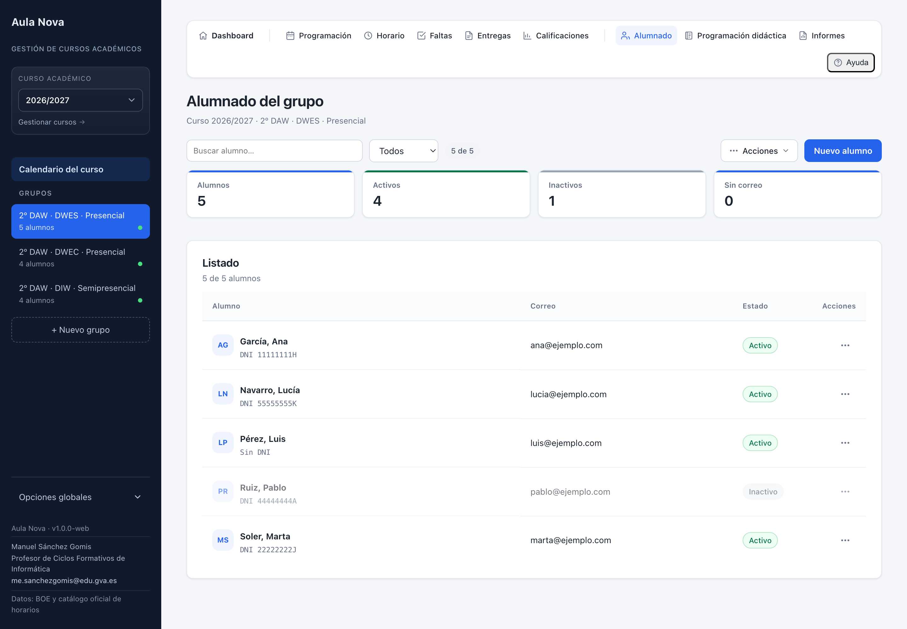
Captura real de Alumnado y formación · clic para ampliarLa sección de alumnado permite dar de alta manualmente o importar desde JSON/CSV. La importación evita duplicados por DNI, correo o nombre y apellidos. Puedes editar los datos, desactivar una matrícula o desmatricular sin borrar el historial del alumno.
La ficha individual reúne sus notas, RA, entregas y evolución. La formación en empresa se registra por periodos, con empresa y fechas. Las FCT no se incluyen en el control de faltas porque no generan faltas de asistencia al módulo.
Puedes crear alumnos uno a uno o importar una lista JSON/CSV. La importación busca duplicados por DNI, correo o nombre y apellidos antes de matricular.
Desactivar un alumno conserva su historial; desmatricularlo lo quita del grupo sin borrar sus datos globales. Puedes reactivarlo cuando vuelva a estar activo.
La ficha reúne sus datos, notas, RA, entregas y evolución. Es el punto de partida para revisar su situación completa antes de una evaluación.
Se registra por periodos, con empresa y fechas. Sirve para completar el expediente y aparece en los informes del alumno.
El alumnado matriculado aparece en calificaciones y en el control de faltas del curso. Las FCT no generan faltas en el control de faltas.
Importa los PDFs de ITACA, configura los módulos y consulta el porcentaje de faltas por alumno.
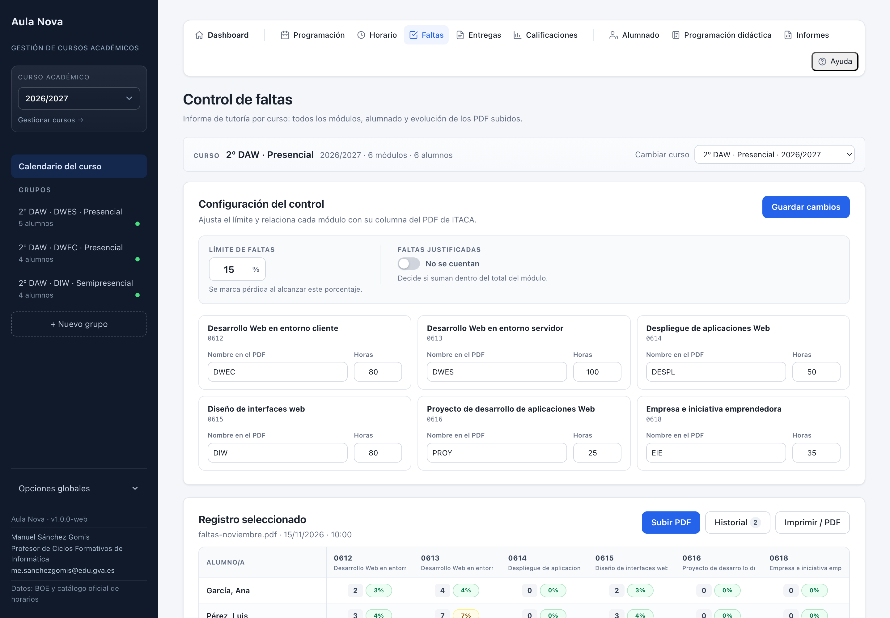
Captura real de Control de faltas · clic para ampliarControl de faltas trabaja por curso/tutoría, no por un único grupo: reúne todos los módulos y el alumnado matriculado en cualquiera de ellos. La configuración permite ajustar el límite de faltas, decidir si cuentan las justificadas y relacionar cada módulo con su columna exacta del PDF de ITACA.
Los PDFs se importan y se guardan las faltas extraídas, no el archivo original. El historial está plegado por defecto y se abre con el botón Historial (n). La tabla muestra el número de faltas en una caja neutra y el porcentaje en una píldora de color; la primera columna queda fija al desplazar horizontalmente. El informe seleccionado se puede imprimir o guardar en PDF.
La pantalla agrupa todos los módulos de un mismo curso/tutoría. Si hay varias cohortes, puedes cambiar de curso desde el selector compacto.
Cada módulo es una tarjeta con su código, el nombre exacto de la columna del PDF de ITACA y las horas. El límite y las faltas justificadas se ajustan en la barra superior.
El botón Subir PDF lee los informes de ITACA y extrae las faltas por alumno y módulo. Se guardan las faltas, no el PDF original.
El historial está plegado para no ocupar espacio. Se abre con Historial (n), muestra cada importación y se cierra al seleccionar un informe o cambiar de curso.
Cada módulo ocupa una columna. El número de faltas va en una caja neutra y el porcentaje en una píldora de color; la primera columna queda fija al desplazar horizontalmente.
El informe seleccionado se puede imprimir o guardar en PDF con el límite, los módulos y los colores de estado.
Genera informes de grupo o de un alumno, con notas, RA, gráficas y formación.
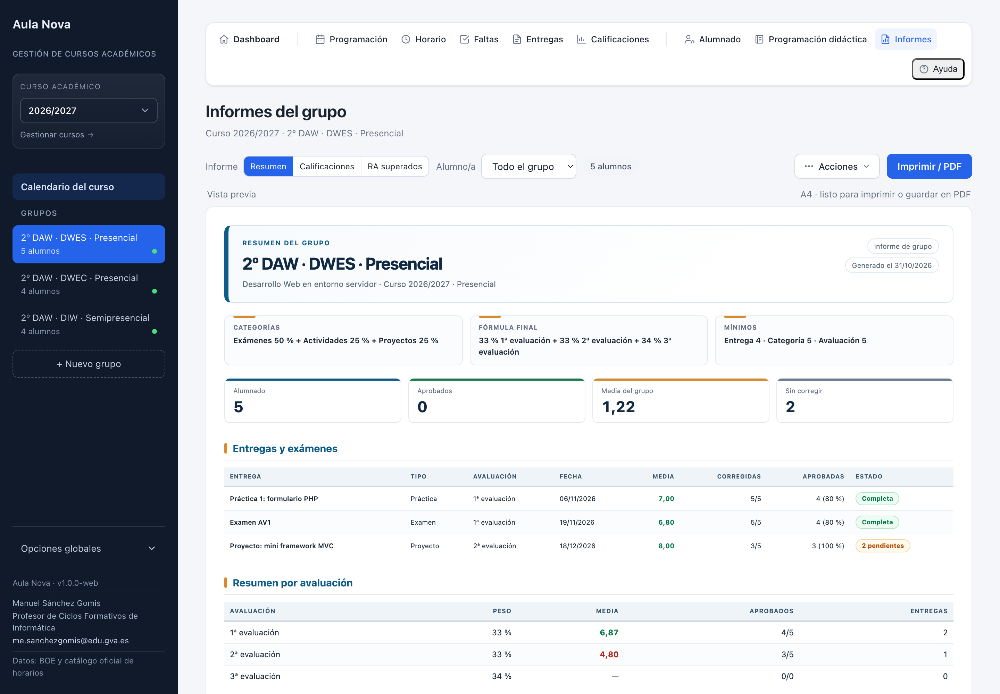
Captura real de Informes · clic para ampliarInformes permite preparar documentación de consulta o entrega. Puedes elegir un resumen, un informe de calificaciones o un informe de RA superados, y limitarlo a todo el grupo o a un alumno concreto.
El informe incluye gráficas, RA/CE, formación en empresa y datos de alumnado. La vista previa respeta el formato A4. Las descargas HTML y CSV están agrupadas en Acciones; Imprimir/PDF es la acción principal y permite guardar el informe como PDF.
Puedes elegir Resumen, Calificaciones o RA superados. Cada tipo cambia las secciones y las gráficas que se incluyen en la vista previa.
El selector de alumnado permite generar el informe de todo el grupo o centrarte en un alumno concreto. El número de alumnos se muestra junto al selector.
El informe puede incluir notas, RA/CE, formación en empresa, datos de alumnado y gráficas. Antes de exportar, elige qué secciones quieres incluir.
Imprimir/PDF es la acción principal. HTML y CSV están en el menú Acciones. La vista previa respeta el formato A4 y refleja las secciones seleccionadas.
Revisa la vista previa antes de imprimir y comprueba que el alumno o el grupo seleccionado son correctos. El informe se genera con los datos guardados en ese momento.
Crea los grupos de clase, cambia de curso académico y consulta el alumnado y los criterios de cada grupo.
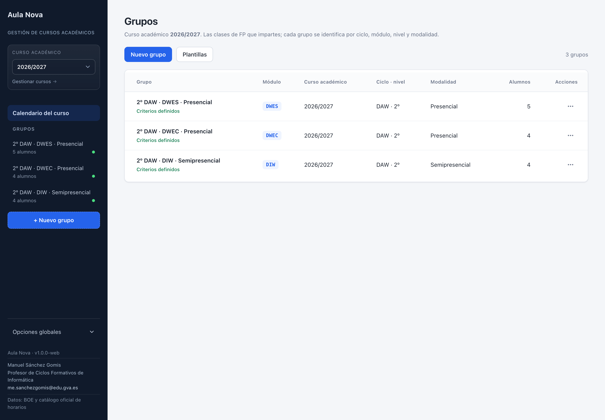
Captura real de Grupos y cursos · clic para ampliarEl grupo es la unidad de trabajo de toda la aplicación: un módulo, un curso, una modalidad y un curso académico. Los grupos se crean desde Gestionar grupos o desde el botón Nuevo grupo de la barra lateral. El nombre se genera automáticamente con las siglas del módulo.
El curso académico se calcula por fecha y se cambia desde la barra lateral. Al cambiar de curso, la lista de grupos se filtra. Los cursos se pueden renombrar y borrar si no tienen grupos; el curso activo vacío se puede borrar y se volverá a crear al guardar un grupo.
El curso se calcula por fecha y se cambia desde la barra lateral. La lista de grupos y el dashboard se filtran por el curso activo.
Se elige ciclo, módulo, curso y modalidad. El nombre se genera con las siglas del módulo, por ejemplo «2º DAW · DWES · Presencial».
Puedes editar los datos del grupo y borrarlo con confirmación. Antes de borrar, revisa que no necesites conservar sus entregas, notas o programación.
Los cursos se pueden renombrar y borrar si no tienen grupos. El curso actual vacío se puede borrar y se recreará al guardar un grupo.
Al seleccionar un grupo se abre su dashboard. Desde la barra superior puedes entrar a programación, faltas, entregas, calificaciones, alumnado, programación didáctica e informes.
Reutiliza criterios de calificación entre grupos del mismo módulo y modalidad.
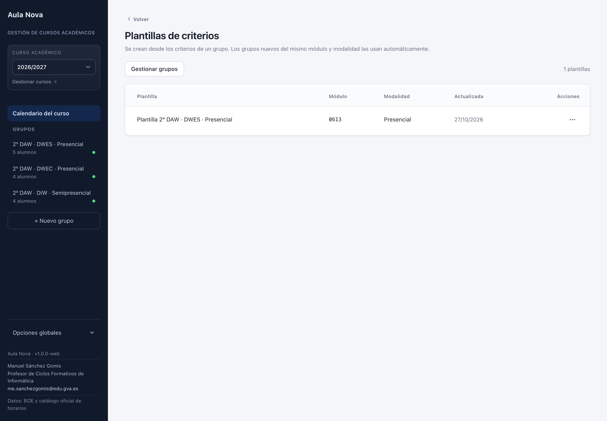
Captura real de Plantillas de criterios · clic para ampliarUna plantilla guarda un modelo de criterios para reutilizarlo. Se crea desde los criterios de un grupo y se aplica automáticamente a los grupos nuevos que tengan el mismo módulo y modalidad.
Las plantillas se editan en una página propia, no en un modal. Si cambias una plantilla, conviene revisar qué grupos nuevos deben crearse o qué grupos existentes quieres actualizar. La copia de criterios a los grupos del mismo módulo se hace desde la propia pantalla de Criterios.
Guarda categorías, pesos, avaluaciones, RA, mínimos y pesos propios por trimestre. Es el modelo completo de cálculo, no solo una lista de nombres.
Los grupos nuevos del mismo módulo y modalidad reciben automáticamente la plantilla. Los grupos existentes no se modifican solos al cambiar la plantilla.
Se abre en una página propia con el mismo editor de criterios. Puedes ajustar los pesos y guardar los cambios sin entrar en cada grupo.
Desde Criterios de un grupo puedes usar «Copiar al mismo módulo» para aplicar sus criterios a otros grupos del mismo módulo. Revisa antes qué grupos se van a actualizar.
Guarda cada grupo en un JSON local y restaura solo el grupo que necesites.
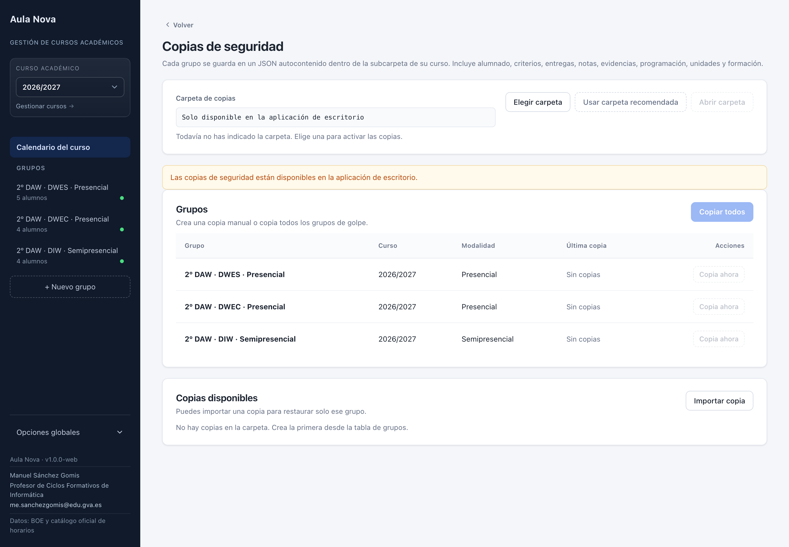
Captura real de Copias de seguridad · clic para ampliarLas copias de seguridad son locales. Se elige una carpeta raíz y la aplicación crea una subcarpeta por curso académico. Cada grupo se guarda como un JSON autocontenido con alumnado, criterios, entregas, notas, evidencias, programación, unidades, eventos, formación y archivos en base64.
La aplicación avisa si la carpeta no está configurada o desaparece. También puede crear una copia automática al abrirse si detecta cambios en el contenido de un grupo. Al importar una copia se restaura solo ese grupo; si ya existe uno con la misma identidad, se sustituye su contenido.
La carpeta raíz se configura una vez y la aplicación crea dentro una subcarpeta por curso académico. Puedes cambiarla cuando quieras desde esta pantalla.
Cada grupo se guarda en un JSON autocontenido: alumnado, criterios, entregas, notas, evidencias, programación, unidades, eventos, formación y archivos en base64.
Al abrir la aplicación se comprueba si cambió el contenido de algún grupo. Si cambió, se crea una copia automática para no perder los últimos cambios.
La importación restaura solo el grupo seleccionado. Si ya existe un grupo con la misma identidad, se sustituye su contenido; los demás grupos no se tocan.
Si la carpeta no está configurada o ha desaparecido, la aplicación muestra un aviso. Revisa la ruta antes de dar por buena una copia manual.
Consulta la normativa y actualiza el contenido desde la barra lateral.
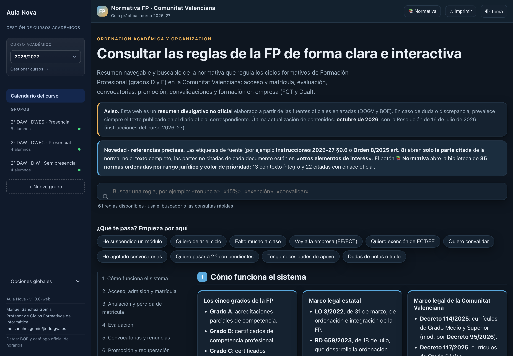
Captura real de Normativa FP · clic para ampliarNormativa FP es una guía de consulta a pantalla completa. Se abre manteniendo la barra lateral para que no pierdas el contexto del grupo y permite buscar y leer la normativa disponible.
La importación de normativa se hace desde Opciones globales. Al importar se sustituye el contenido de consulta; no cambia por sí sola las notas, los criterios ni las programaciones ya guardadas.
La normativa se abre en una vista de lectura amplia, manteniendo la barra lateral para conservar el contexto del grupo.
La importación está en Opciones globales. Al terminar, la aplicación actualiza el contenido y vuelve a la pantalla de normativa.
Importar normativa sustituye el contenido de consulta, pero no modifica por sí solo las notas, criterios, programaciones o copias ya guardadas.
La normativa sirve de referencia para interpretar los RA y CE del módulo. Los datos concretos de evaluación siguen viviendo en los criterios y en las unidades.
El menú inferior de la barra lateral reúne las herramientas que no pertenecen a un único grupo.
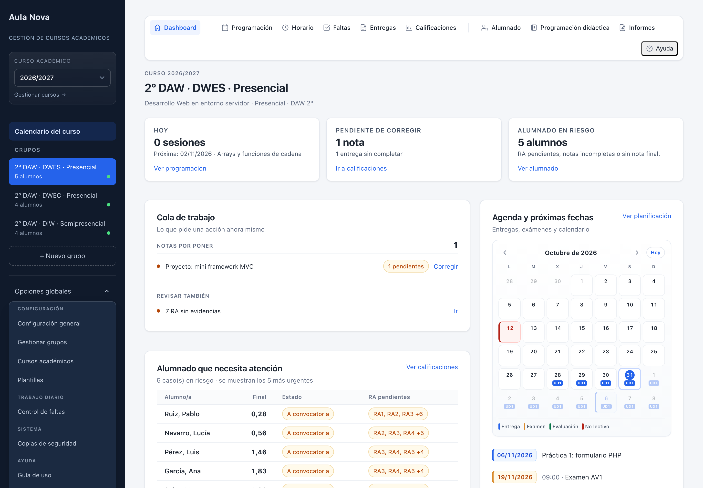
Captura real de Opciones globales · clic para ampliarOpciones globales está al final de la barra lateral. Desde ahí se gestionan los grupos, los cursos académicos, las plantillas, el control de faltas, las copias de seguridad, la guía, la normativa y la importación de normativa.
En la previsualización web aparecen además dos acciones de datos de prueba: restaurar los datos de ejemplo y eliminarlos. Estas acciones no afectan a la aplicación de escritorio. La guía de uso también está en este menú para poder consultarla sin perder la pantalla en la que estás.
Abre la lista de grupos del curso activo. Desde ahí puedes crear, editar, borrar y entrar al dashboard de cada grupo.
Permite renombrar o borrar cursos sin grupos. El curso activo se cambia desde el selector superior de la barra lateral.
Reutiliza criterios entre grupos del mismo módulo y modalidad. Los grupos nuevos reciben la plantilla automáticamente.
Abre la vista de tutoría para importar PDFs de ITACA, configurar módulos y consultar el historial de faltas.
Configura la carpeta, crea copias manuales o restaura un grupo concreto desde su JSON.
Abre esta guía completa con capturas. La ayuda contextual de cada sección se abre desde el botón Ayuda de la barra superior.
La primera abre la consulta; la segunda importa un nuevo contenido. La importación no cambia por sí sola las notas ni los criterios.
Solo aparecen en la previsualización web. Permiten restaurar el grupo de ejemplo o vaciar los datos simulados; no afectan a la aplicación de escritorio.